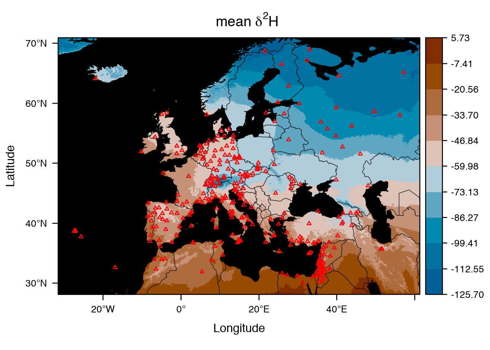

This is the development repository of IsoriX, an R package aiming at building isoscapes using mixed models and inferring the geographic origin of organisms based on their isotopic ratios.

Where to learn about IsoriX?
You can start by reading our bookdown!
Then, it may not be a bad idea to also have a look at our papers: here and there.
Another great source of help is our mailing list. First register for free (using your Google account) and then feel free to send us questions.
For specific help on IsoriX functions and objects, you should also check the documentation embedded in the package after having installed and attached (= loaded) it:
help(package = "IsoriX")How to download and install IsoriX?
You can download and install the stable version of IsoriX directly from within R by typing:
install.packages("IsoriX", dependencies = TRUE)Note: if you get into troubles due to suggested package(s) (colorspace, elevatr, gmp, magick, rgl, spelling, testthat, webshot2 or withr) retry using simply:
install.packages("IsoriX")These packages offer additional functionalities but some of them can be difficult to install on some systems.
If you want the development version of IsoriX, you can download and install it by typing:
remotes::install_github("courtiol/IsoriX")Mind that you need the R package remotes to be installed for that to work. Mind also that the development version, being under development, can sometimes contain code that is partly broken.
How can you contribute?
There are plenty way you can contribute! If you are fluent in R programming, you can improve the code and develop new functions. If you are not so fluent, you can still edit the documentation files to make them more complete and clearer, write new vignettes, report bugs or make feature requests (see the chapter on contributing of our bookdown for details, including the simple steps to propose changes using pull requests).
For the maintainer
Testing a pull request locally
From the RStudio project of the package (IsoriX.Rproj, at the root of the repository), with 123 replaced by the number of the pull request:
usethis::pr_fetch(123) ## checks out the branch of the pull request
devtools::load_all() ## loads the version of IsoriX proposed in the pull request
withr::with_envvar(c(OMP_NUM_THREADS = "1", OPENBLAS_NUM_THREADS = "1"),
devtools::test()) ## runs the tests, including the plot snapshot tests
usethis::pr_finish() ## once done (or merged): goes back to the main branch and deletes the local branchUse usethis::pr_pause() instead of usethis::pr_finish() to go back to the main branch while keeping the branch of the pull request for later.
Preparing a release
- run
gitcreds::gitcreds_set()to enter the GitHub token; - run
usethis::use_release_issue(version = "XX"), with"XX"the future release number: it creates a GitHub issue with the checklist for the release, which includes the steps specific to IsoriX defined inrelease_bullets()(inR/zzz.R); - follow the steps in the issue created by the previous command.
Some of these steps use the scripts stored in the folder release_checks (see the README in there).
Recreating the datasets
The script creating the datasets stored in IsoriX is material_for_maintainer/sources_for_datasets/create_rda.R (most of the source files it uses are not stored in the repository).
Organisation of the repository
The R package itself is at the root of the repository (DESCRIPTION, R/, man/, tests/…), so that tools such as remotes::install_github("courtiol/IsoriX") or rhub::rhub_setup() work directly. The other folders (bookdown, presentation, release_checks, material_for_maintainer, pkg_manuals…) are excluded from the package via .Rbuildignore.